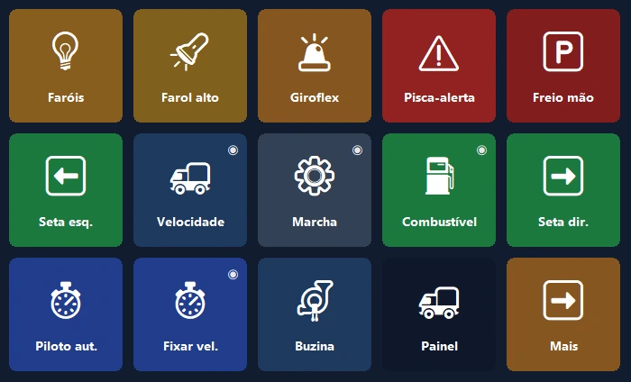
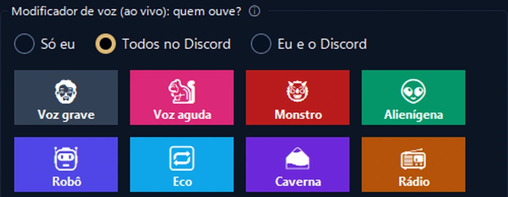
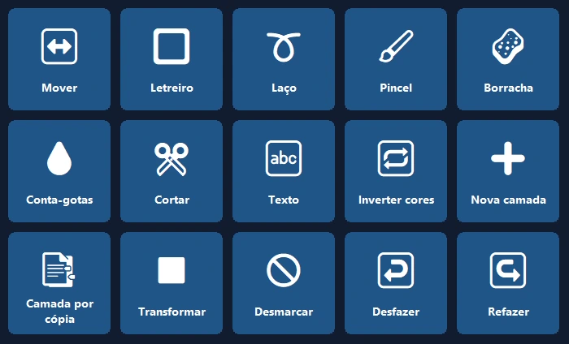
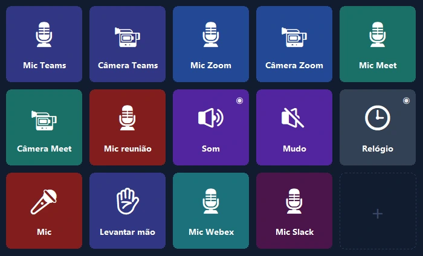

Seu celular, o painel de controle do seu PC.
Atalhos com um toque, OBS, Discord, Spotify e painéis de jogos. Por USB, Wi‑Fi ou dados móveis, com criptografia de ponta a ponta.
O painel do seu caminhão, agora no celular.
Velocidade, RPM, combustível e luzes de alerta realistas ao vivo; os comandos do caminhão a um toque.
- 🚦Um painel de verdadeVelocidade, limite, RPM, combustível e horário de chegada; as luzes de alerta acendem como no jogo.
- 🕹Controle com um toqueFaróis, freio de mão, piloto automático; olhe para a esquerda ou para a direita com um toque.
- 📳Sem configuraçãoQuando o jogo abre, o celular oferece um painel pronto e muda para ele toda vez que você joga.

Comande sua live com uma mão.
Seu celular no lugar de um aparelho caro: OBS, efeitos sonoros, Discord e música em uma só tela.
- 🎬Controle do OBSCenas, gravação e transmissão, com os tempos no próprio botão.
- 📳Painel de sons e músicaToque sons prontos e controle o Spotify e o volume de cada app numa só tela.
- 🎙Estúdio de vozVozes naturais feminina, masculina e infantil, ou crie a sua; silencie o microfone do Discord com um toque.


Abra seu programa e o painel está pronto.
Painéis feitos com os atalhos oficiais do Photoshop, Premiere Pro, After Effects, Illustrator, DaVinci Resolve, Blender, Figma e VS Code.
- ✨Zero configuraçãoQuando o programa vem para a frente, o celular oferece o painel e depois muda para ele sozinho (Pro).
- ⌨Os atalhos certosFerramentas, camadas, desfazer, marcadores, com os atalhos padrão de cada programa.
Seu microfone a um toque.
Silencie o microfone no Teams, Zoom, Meet, Webex e Slack sem configurar atalhos, mesmo com a janela em segundo plano.
- 🎙Só aquele programaO Windows silencia só o microfone do programa de reuniões; os outros não são afetados.
- 🔴Veja o estado num relanceEnquanto silenciado, a luz do botão fica vermelha; também na versão grátis.

A tela mais útil da sua mesa.
Comece em um minuto com um layout pronto; os logos reais dos seus programas entram sozinhos.
Segunda tela
Veja a tela do PC no celular e use-a como mouse e teclado touch.
Volume por app
Ajuste o volume de cada programa separadamente; fone ↔ alto-falante com um toque.
Páginas inteligentes
As páginas seguem o programa em primeiro plano; timers, pastas e ações com várias etapas.
Conecta de qualquer lugar
Não precisa do mesmo Wi‑Fi: também funciona com dados móveis e com vários PCs.
Backup criptografado na nuvem
Seu layout tem backup criptografado, sem conta, e volta em um PC novo.
Privacidade
Sem conta, sem anúncios, sem rastreamento. Seus botões ficam nos seus dispositivos.
Pronto em um minuto.
Instale o programa
Baixe o PanelDeck grátis para Windows e abra.
Leia o código QR
O app do celular pareia em segundos com o código QR.
Toque
Escolha um layout pronto ou crie seus próprios botões.
Pague uma vez, seu para sempre.
Sem assinatura, sem anúncios, sem rastreamento. Todas as atualizações incluídas. O Google Play mostra o preço local do seu país.
Grátis
- Conexão por USB, Wi‑Fi e dados móveis
- 6 botões na primeira página
- Atalhos, mídia, abrir programas, Discord, timer
PanelDeck Pro
Preço de lançamento; depois US$ 6,99. 7 dias de teste grátis.
- 6 abas, pastas e botões ilimitados
- Segunda tela, controles de volume, informações ao vivo
- Painel do caminhão, Estúdio de voz, painéis que chegam ao abrir um programa
- Backup criptografado na nuvem
Bom saber
Preciso criar uma conta?
Não. O PanelDeck não pede conta; seus botões ficam nos seus dispositivos.
Funciona longe de casa?
Sim. Sem o mesmo Wi‑Fi, o celular se conecta por dados móveis, com criptografia de ponta a ponta.
Com quais jogos funciona?
Euro Truck Simulator 2 e American Truck Simulator têm suporte completo. Painéis ao vivo para simuladores de corrida e de voo estão em beta.
Tem versão para iPhone?
Por enquanto, Android. A versão para iPhone e iPad está no roteiro.
E se o Windows disser que “protegeu o computador”?
Clique em “Mais informações” → “Executar assim mesmo”. Detalhes no guia de instalação.